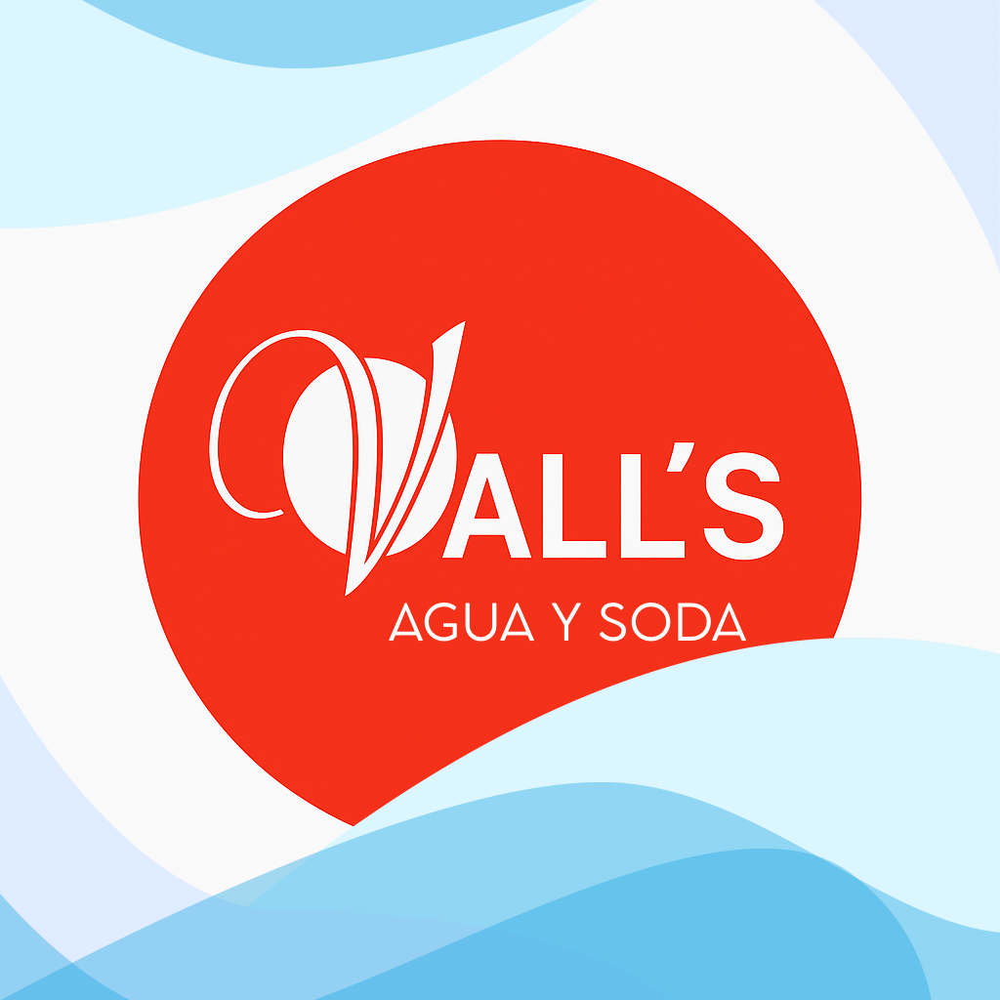
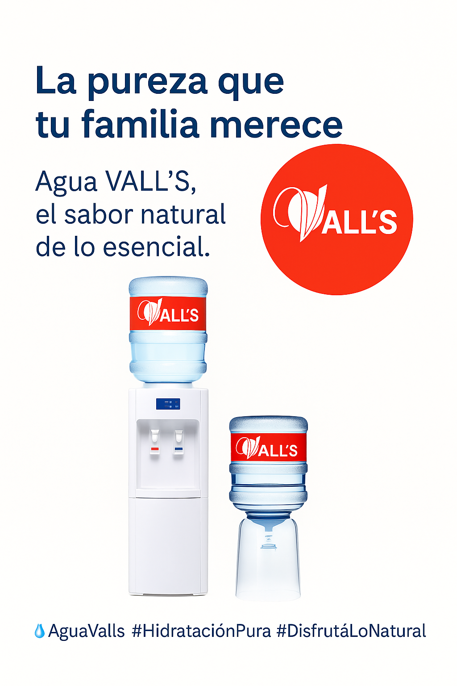
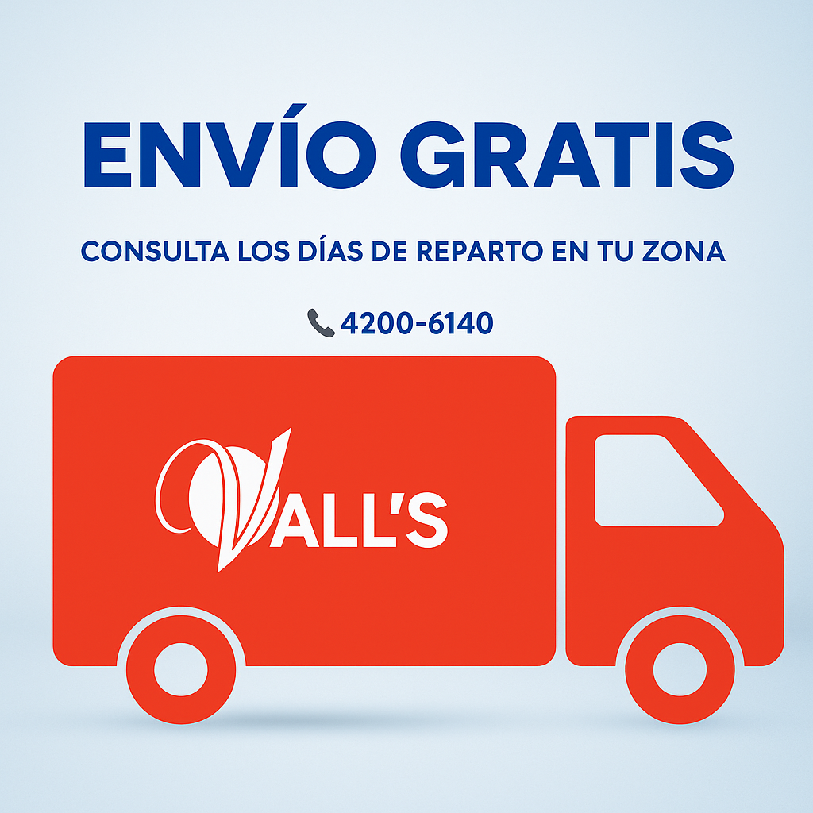

Empresa familiar de Quilmes con más de 30 años de experiencia
Bidón de 20 L | Bidón de 12 L | Sifones de soda | Dispenser frío/calor y común
 ¿Llegan a todas las zonas? Sí, consultá los días de reparto en tu zona.
¿Tienen promociones? Sí, consultanos por promos para nuevos clientes y recomendados.
¿El agua es segura? Sí, contamos con análisis bacteriológicos que garantizan la calidad.
📞 Teléfono fijo: 4200-6140
📱 WhatsApp: 11-6257-1153
Escribinos por WhatsApp 